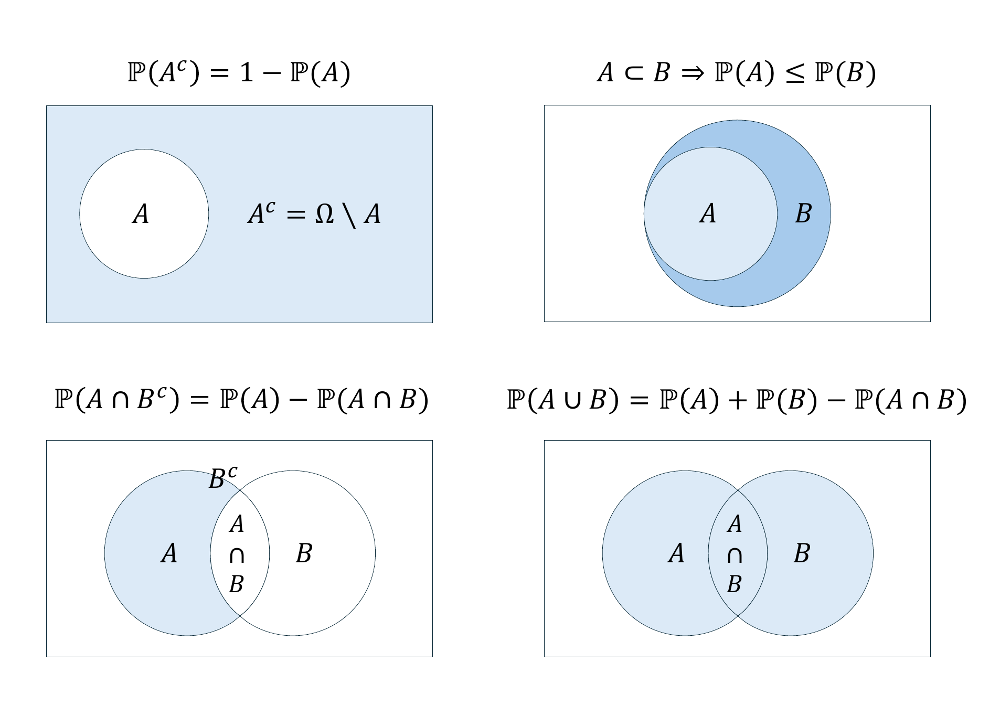
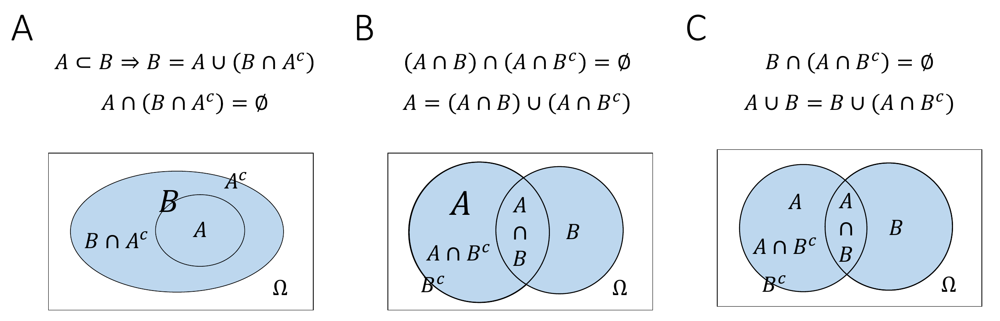
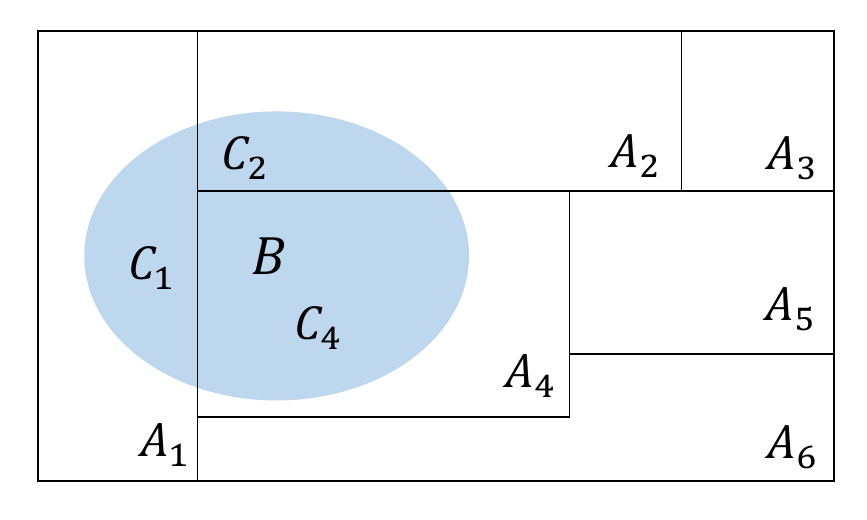

20 Elementary probabilities
In this section, with the concepts of the joint probability of two events and the conditional probability of an event, we introduce two elementary forms of probabilities. Intuitively, the concept of joint probability refers to the probability of the “simultaneous” occurrence of two events \(A\) and \(B\), and the concept of conditional probability refers to the probability of the occurrence of an event \(A\) “when one knows about the occurrence of another event \(B\)”. If it is irrelevant for the probability of an event \(A\) whether or not an event \(B\) has occurred, then \(A\) and \(B\) are called independent events. Intuitively, independent events model the absence of mutual influences.
20.1 Joint probabilities
The concept of the joint probability of two events is defined as follows.
Definition 20.1 (Joint probability) Let \((\Omega, \mathcal{A}, \mathbb{P})\) be a probability space and let \(A,B \in \mathcal{A}\). Then \[\begin{equation} \mathbb{P}(A \cap B) \end{equation}\] is called the joint probability of \(A\) and \(B\).
As noted above, \(\mathbb{P}(A \cap B)\) corresponds to the probability that the events \(A\) and \(B\) occur “simultaneously”. This is best understood against the background of the mechanics of the probability space model. According to this mechanics, \(\mathbb{P}(A \cap B)\) is precisely the probability that, in one run of a random process, an \(\omega\) is realized for which both \(\omega \in A\) and \(\omega \in B\) hold.
Example
As a first example of a joint probability of two events, we again consider the probability space model of throwing a fair die. Let \(A\) be the event “An even number of pips appears”, that is, \(A := \{2,4,6\}\), and let \(B\) be the event “A number of pips greater than three appears”, that is, \(B := \{4,5,6\}\). Set-theoretically, we then have \[\begin{equation} A \cap B = \{2,4,6\} \cap \{4,5,6\} = \{4,6\}. \end{equation}\] The interpretation of \(A \cap B = \{4,6\}\) is exactly “An even number of pips appears and this number of pips is greater than three”. Assuming fairness of the die, that is, for \(\mathbb{P}(\{4\}) = \mathbb{P}(\{6\}) := 1/6\), we can easily calculate the probability of this event using the \(\sigma\)-additivity of \(\mathbb{P}\). We obtain \[\begin{align} \begin{split} \mathbb{P}(A \cap B) & = \mathbb{P}(\{2,4,6\} \cap \{4,5,6\}) \\ & = \mathbb{P}(\{4,6\}) \\ & = \mathbb{P}(\{4\}) + \mathbb{P}(\{6\}) \\ & = \frac{1}{6} + \frac{1}{6} \\ & = \frac{1}{3}. \end{split} \end{align}\]
When thinking about joint probabilities, it is of course important not to confuse the joint probability \(\mathbb{P}(A \cap B)\) with the probability \(\mathbb{P}(A \cup B)\) of the event \(A \cup B\). Recall that the union of two sets \(\cup\) corresponds to the inclusive or, that is, to an and/or (cf. Section 1.3 and Section 2.2). The event \(A \cup B\) therefore corresponds to the event that event \(A\) and/or event \(B\) occurs. In particular, \(\omega \in A \cup B\) is already satisfied if for the outcome of one run of a random process only \(\omega \in A\) or only \(\omega \in B\) holds. Concretely, for the events \(A := \{2,4,6\}\) and \(B := \{4,5,6\}\) from the die example above, we obtain \[\begin{equation} A \cup B = \{2,4,6\} \cup \{4,5,6\} = \{2,4,5,6\} \end{equation}\] with the interpretation “An even number of pips appears and/or a number of pips greater than three appears”. For the corresponding probability we obtain \[\begin{equation} \mathbb{P}(\{2,4,5,6\}) = \frac{2}{3}, \end{equation}\] so in this case apparently \(\mathbb{P}(A \cap B) \neq \mathbb{P}(A \cup B)\).
With the help of the following theorem, in this section we finally record a few useful properties for calculating with probabilities, which follow directly from the connection between set operations and the \(\sigma\)-additivity of probability measures. We visualize the corresponding statements in Figure 20.1 using Venn diagrams.

Theorem 20.1 (Further properties of probabilities) Let \((\Omega, \mathcal{A}, \mathbb{P})\) be a probability space and let \(A,B \in \mathcal{A}\) be events. Then
- \(\mathbb{P}(A^c) = 1 - \mathbb{P}(A)\).
- \(A \subset B \Rightarrow \mathbb{P}(A) \le \mathbb{P}(B)\).
- \(\mathbb{P}(A \cap B^c) = \mathbb{P}(A) - \mathbb{P}(A \cap B)\)
- \(\mathbb{P}(A \cup B) = \mathbb{P}(A) + \mathbb{P}(B) - \mathbb{P}(A \cap B)\).
Proof. The second, third, and fourth statements of this theorem are based on elementary set-theoretic statements and the \(\sigma\)-additivity of \(\mathbb{P}\). We do not prove these elementary set-theoretic statements here, but instead refer in each case to the intuition conveyed by the Venn diagrams in Figure 20.2.
For 1.: We first note that from \(A^c := \Omega \setminus A\) it follows that \(A^c \cup A = \Omega\) and that \(A^c \cap A = \emptyset\). With normalization and \(\sigma\)-additivity of \(\mathbb{P}\) it then follows that \[\begin{equation} \mathbb{P}(\Omega) = 1 \Leftrightarrow \mathbb{P}(A^c \cup A) = 1 \Leftrightarrow \mathbb{P}(A^c) + \mathbb{P}(A) = 1 \Leftrightarrow \mathbb{P}(A^c) = 1 - \mathbb{P}(A). \end{equation}\]
For 2.: First, we have (cf. Figure A) \[\begin{equation} A \subset B \Rightarrow B = A \cup (B \cap A^c) \mbox{ with } A \cap (B \cap A^c) = \emptyset. \end{equation}\] With the \(\sigma\)-additivity of \(\mathbb{P}\) it follows that \[\begin{equation} \mathbb{P}(B) = \mathbb{P}(A) + \mathbb{P}(B \cap A^c). \end{equation}\] With \(\mathbb{P}(B \cap A^c) \ge 0\) it follows that \(\mathbb{P}(A) \le \mathbb{P}(B)\).
For 3.: First, we have (cf. Figure B) \[\begin{equation} (A \cap B) \cap (A \cap B^c) = \emptyset \mbox{ and } A = (A \cap B) \cup (A \cap B^c). \end{equation}\] With the \(\sigma\)-additivity of \(\mathbb{P}\) it follows that \[\begin{align} \begin{split} \mathbb{P}(A) = \mathbb{P}(A \cap B) + \mathbb{P}(A \cap B^c) \Leftrightarrow \mathbb{P}(A \cap B) = \mathbb{P}(A) - \mathbb{P}(A \cap B^c). \end{split} \end{align}\]
For 4.: First, we have (cf. Figure C) \[\begin{equation} B \cap (A \cap B^c) = \emptyset \mbox{ and } A \cup B = B \cup (A \cap B^c). \end{equation}\] With the \(\sigma\)-additivity of \(\mathbb{P}\) it follows that \[\begin{equation} \mathbb{P}(A \cup B) = \mathbb{P}(B) + \mathbb{P}(A \cap B^c). \end{equation}\] With 3. it then follows that \[\begin{equation} \mathbb{P}(A \cup B) = \mathbb{P}(B) + \mathbb{P}(A) - \mathbb{P}(A \cap B). \end{equation}\]

20.2 Conditional probabilities
We now turn to the concept of conditional probability.
Definition 20.2 (Conditional probability) Let \((\Omega,\mathcal{A}, \mathbb{P})\) be a probability space and let \(A, B\in \mathcal{A}\) be events with \(\mathbb{P}(B) > 0\). The conditional probability of event \(A\) given event \(B\) is defined as \[\begin{equation} \mathbb{P}(A|B) := \frac{\mathbb{P}(A \cap B)}{\mathbb{P}(B)}. \end{equation}\]
We note: The conditional probability \(\mathbb{P}(A|B)\) of an event \(A\) given an event \(B\) is the joint probability \(\mathbb{P}(A \cap B)\) of the events \(A\) and \(B\), scaled by \(1/\mathbb{P}(B)\). Thus, if in the formulation of a probabilistic model one specifies the joint probability \(\mathbb{P}(A \cap B)\) as well as the probability \(\mathbb{P}(B) > 0\) of the event \(B\), then in particular one also specifies the conditional probability \(\mathbb{P}(A|B)\) of event \(A\) given event \(B\). We further point out that there is no reason to confuse the conditional probabilities \[\begin{equation} \mathbb{P}(A|B) = \frac{\mathbb{P}(A \cap B)}{\mathbb{P}(B)} \mbox{ and } \mathbb{P}(B|A) = \frac{\mathbb{P}(B \cap A)}{\mathbb{P}(A)} = \frac{\mathbb{P}(A \cap B)}{\mathbb{P}(A)} \end{equation}\] (cf. Herzog & Ostwald (2013)). In particular, from \(\mathbb{P}(A) \neq \mathbb{P}(B)\) it always follows directly that \(\mathbb{P}(A|B) \neq \mathbb{P}(B|A)\). Finally, note that a generalization of the conditional probability in Definition 20.2 to the case \(\mathbb{P}(B) = 0\) is possible, but technically involved. For this we refer to the advanced literature, e.g. Meintrup & Schäffler (2005) and Schmidt (2009).
Examples
Throwing one die
As a first example of a conditional probability, we again consider the model \((\Omega, \mathcal{A}, \mathbb{P})\) of the fair die. We want to calculate the conditional probability of the event “An even number of pips appears” given the event “A number greater than three appears”. We have already seen above that the event “An even number of pips appears” corresponds to the subset \(A := \{2,4,6\}\) of \(\Omega\), and that the event “A number greater than three appears” corresponds to the subset \(B := \{4,5,6\}\) of \(\Omega\). Furthermore, we have seen that, under the assumption that the modeled die is fair, \[\begin{align} \begin{split} \mathbb{P}(\{2,4,6\}) = \mathbb{P}(\{2\}) + \mathbb{P}(\{4\}) + \mathbb{P}(\{6\}) = \frac{1}{6} + \frac{1}{6} + \frac{1}{6} = \frac{3}{6} \end{split} \end{align}\] and that \[\begin{align} \begin{split} \mathbb{P}(\{4,5,6\}) = \mathbb{P}(\{4\}) + \mathbb{P}(\{5\}) + \mathbb{P}(\{6\}) = \frac{1}{6} + \frac{1}{6} + \frac{1}{6} = \frac{3}{6}. \end{split} \end{align}\] Finally, we had also seen that the event \(A \cap B\), that is, the event “An even number of pips greater than three appears”, has probability \[\begin{align} \begin{split} \mathbb{P}(A \cap B) = \mathbb{P}(\{2,4,6\} \cap \{4,5,6\}) = \mathbb{P}(\{4,6\}) = \mathbb{P}(\{4\}) + \mathbb{P}(\{6\}) = \frac{1}{6} + \frac{1}{6} = \frac{2}{6} \end{split} \end{align}\] By the definition of conditional probability, we then directly obtain \[\begin{align} \begin{split} \mathbb{P}(A|B) = \frac{\mathbb{P}(A \cap B)}{\mathbb{P}(B)} = \frac{\mathbb{P}(\{4,6\})}{\mathbb{P}(\{4,5,6\})} = \frac{2}{6}\cdot\frac{6}{3} = \frac{2}{3}. \end{split} \end{align}\]
In this context, an interpretation of the conditional probability \(\mathbb{P}(A|B)\) as a decrease in subjective uncertainty or as a gain in subjective information relative to the unconditional probability \(\mathbb{P}(A)\) suggests itself: if one knows that a number of pips greater than three has appeared, that is, that the event \(\omega \in B\) is present, then the probability that \(\omega\) is an even number of pips is \(2/3\). If, by contrast, one does not know that the event \(\omega \in B\) is present (and has no other information about \(\omega\)), then the probability of an even number of pips appearing is only \(1/2\). Conditioning on the presence of an event therefore corresponds to including information and thus to the decrease of uncertainty in probability-theoretic models. This is the basis of Bayesian statistics. A similar interpretation is also suggested by the following, perhaps more everyday, example.
Value of a BDI-II item
We again consider the example of the value of a patient for the item “Sadness” of the English version of the BDI-II. Above, we assigned the probabilities \[\begin{equation} \mathbb{P}(\{0\}) := \frac{2}{10}, \quad \mathbb{P}(\{1\}) := \frac{3}{10}, \quad \mathbb{P}(\{2\}) := \frac{4}{10}, \quad \mathbb{P}(\{3\}) := \frac{1}{10}, \quad \end{equation}\] to the possible item responses (0), (1), (2), (3). We now assume that we know of a patient that she chose a value greater than (1), and ask for the probabilities that the patient chose value (2) or (3). To this end, we first consider the probability of the event “The patient chose a value greater than (1)”. This obviously corresponds to the subset \(B := \{2,3\}\) of \(\Omega\). With \(\sigma\)-additivity, as seen above, the probability of this event is \(\mathbb{P}(\{2,3\}) = 1/2\). We therefore consider the events listed in Table 20.1.
| Description | Set form |
|---|---|
| The patient chose a value greater than (1) | \(\omega \in B := \{2,3\}\) |
| The patient chose response (2) | \(\omega \in A_1 := \{2\}\) |
| The patient chose response (3) | \(\omega \in A_2 := \{3\}\) |
We obtain \[\begin{equation} \mathbb{P}(A_1|B) = \frac{\mathbb{P}(A_1 \cap B)}{\mathbb{P}(B)} = \frac{\mathbb{P}(\{2\} \cap \{2,3\})}{\mathbb{P}(\{2,3\})} = \frac{\mathbb{P}(\{2\})}{\mathbb{P}(\{2,3\})} = \frac{4}{10} \cdot \frac{2}{1} = \frac{8}{10} \end{equation}\] and \[\begin{equation} \mathbb{P}(A_2|B) = \frac{\mathbb{P}(A_2 \cap B)}{\mathbb{P}(B)} = \frac{\mathbb{P}(\{3\} \cap \{2,3\})}{\mathbb{P}(\{2,3\})} = \frac{\mathbb{P}(\{3\})}{\mathbb{P}(\{2,3\})} = \frac{1}{10} \cdot \frac{2}{1} = \frac{2}{10}. \end{equation}\] Note that \[\begin{equation} \mathbb{P}(A_1|B) + \mathbb{P}(A_2|B) = \frac{8}{10} + \frac{2}{10} = 1. \end{equation}\]
Based on the definition of the conditional probability of an event under the condition of the occurrence of a fixed event \(B\), one can define a probability measure that gives the probabilities of all events of the event system under the condition of the occurrence of a fixed event \(B\). This probability measure is called the conditional probability given event \(B\).
Theorem 20.2 (Conditional probability) For a fixed \(B \in \mathcal{A}\) with \(\mathbb{P}(B) > 0\), let \[\begin{equation} \mathbb{P}(\cdot|B) : \mathcal{A} \to [0,1], A \mapsto \mathbb{P}(A|B) := \frac{\mathbb{P}(A \cap B)}{\mathbb{P}(B)} \end{equation}\] Then \(\mathbb{P}(\cdot|B)\) is a probability measure and is called the conditional probability given event \(B\).
Proof. We verify the defining properties of a probability measure.
(1) \(\mathbb{P}(A|B) \ge 0\) for all \(A \in \mathcal{A}\)
By the definition of conditional probability, \(\mathbb{P}(A|B) = \mathbb{P}(A \cap B)/\mathbb{P}(B)\) with \(\mathbb{P}(B)>0\). With the theorem on closure of \(\sigma\)-algebras under intersections and the definition of \(\mathbb{P}\), \(\mathbb{P}(A \cap B) \ge 0\) holds, and hence the statement follows.
(2) \(\mathbb{P}(\Omega|B) = 1\).
We have \[\begin{equation} \mathbb{P}(\Omega|B) = \frac{\mathbb{P}(\Omega \cap B)}{\mathbb{P}(B)} = \frac{\mathbb{P}(B)}{\mathbb{P}(B)} = 1. \end{equation}\]
(3) \(\mathbb{P}\left(\cup_{i=1}^\infty A_i|B \right) = \sum_{i=1}^\infty \mathbb{P}(A_i|B)\) for pairwise disjoint \(A_1,A_2,... \in \mathcal{A}\).
With the associative and distributive laws of union and intersection, first \[\begin{equation} \left(\cup_{i=1}^\infty A_i\right) \cap B = \left(A_1 \cup A_2 \cup \cdots \right) \cap B = \left(A_1 \cap B\right) \cup \left(A_2 \cap B\right) \cup \cdots = \cup_{i=1}^\infty \left(A_i \cap B\right). \end{equation}\] Furthermore, with \(A_i \cap A_j = \emptyset\) and the associative and distributive laws of union and intersection, the \(A_i \cap B\) for \(i = 1,2,...\) are also pairwise disjoint, because \[\begin{equation} \left(A_i \cap B\right) \cap \left(A_j \cap B\right) = \left(A_i \cap A_j\right) \cap (B \cap B) = \emptyset \cap B = \emptyset. \end{equation}\] With the \(\sigma\)-additivity of \(\mathbb{P}\) it then follows that \[\begin{align} \begin{split} \mathbb{P}\left(\cup_{i=1}^\infty A_i|B \right) & = \frac{\mathbb{P}\left(\left(\cup_{i=1}^\infty A_i\right) \cap B\right)}{\mathbb{P}(B)} \\ & = \frac{\mathbb{P}\left(\cup_{i=1}^\infty \left(A_i \cap B\right) \right)}{\mathbb{P}(B)} \\ & = \frac{\sum_{i=1}^\infty \mathbb{P}\left(A_i \cap B\right)}{\mathbb{P}(B)} \\ & = \sum_{i=1}^\infty \frac{\mathbb{P}\left(A_i \cap B\right)}{\mathbb{P}(B)} \\ & = \sum_{i=1}^\infty \mathbb{P}(A_i|B). \end{split} \end{align}\]
Note that for the conditional probability \(\mathbb{P}(\cdot|B)\), the calculation rules of probability theory apply to the events to the left of the bar. In particular, in contrast to \(\mathbb{P}(\cdot \cap B)\), \(\mathbb{P}(\cdot \vert B)\) defines a probability measure for all \(A \in \mathcal{A}\). Thus, for example, for \(0 < \mathbb{P}(B) < 1\), \(\mathbb{P}(\Omega|B) = 1\), but \(\mathbb{P}(\Omega \cap B) = \mathbb{P}(B) < 1\). One therefore also says that \(\mathbb{P}(\cdot \vert B)\) is normalized, whereas \(\mathbb{P}(\cdot \cap B)\) is not.
At the end of this section, we consider three technical consequences of the definition of conditional probability, which we formulate as theorems.
The first theorem concerns the relation between joint and conditional probabilities and reiterates how joint probabilities can be calculated from conditional and total probabilities.
Theorem 20.3 (Joint and conditional probabilities) Let \((\Omega,\mathcal{A}, \mathbb{P})\) be a probability space and let \(A,B\in \mathcal{A}\) with \(\mathbb{P}(A) > 0\) and \(P(B)>0\). Then \[\begin{equation} \mathbb{P}(A \cap B) = \mathbb{P}(A|B)\mathbb{P}(B) = \mathbb{P}(B|A)\mathbb{P}(A). \end{equation}\]
Proof. With the definition of the respective conditional probability, it follows directly that \[\begin{equation} \mathbb{P}(A|B) = \frac{\mathbb{P}(A \cap B)}{\mathbb{P}(B)} \Leftrightarrow \mathbb{P}(A \cap B) =\mathbb{P}(A|B)\mathbb{P}(B) \end{equation}\] and \[\begin{equation} \mathbb{P}(B|A) = \frac{\mathbb{P}(B \cap A)}{\mathbb{P}(A)} \Leftrightarrow \mathbb{P}(A \cap B) =\mathbb{P}(B|A)\mathbb{P}(A). \end{equation}\]
Just as specifying \(\mathbb{P}(A \cap B)\) and \(\mathbb{P}(A)\) specifies the conditional probability \(\mathbb{P}(B|A)\), specifying \(\mathbb{P}(A)\) and \(\mathbb{P}(B|A)\) therefore specifies the joint probability \(\mathbb{P}(A \cap B)\).
The following so-called law of total probability states how unconditional, so-called total probabilities can be calculated based on joint probabilities.
Theorem 20.4 (Law of total probability) Let \((\Omega,\mathcal{A},\mathbb{P})\) be a probability space and let \(A_1,...,A_k\) with \(\mathbb{P}(A_i) > 0\) be a partition of \(\Omega\). Then for every \(B \in \mathcal{A}\), \[\begin{equation} \mathbb{P}(B) = \sum_{i=1}^k \mathbb{P}(B \cap A_i) = \sum_{i=1}^k \mathbb{P}(B|A_i)\mathbb{P}(A_i). \end{equation}\]
Proof. For \(i = 1,...,k\), let \(C_i := B \cap A_i\), so that \(\cup_{i=1}^k C_i = B\) and \(C_i \cap C_j = \emptyset\) for \(1 \le i,j \le k,i \neq j\). We illustrate these definitions in Figure 20.3 using a Venn diagram.

Thus, with the definition of conditional probability for \(\mathbb{P}(A_i) > 0\), we have \[\begin{equation} \mathbb{P}(B) = \sum_{i=1}^k \mathbb{P}(C_i) = \sum_{i=1}^k \mathbb{P}(B \cap A_i) = \sum_{i=1}^k \mathbb{P}(B|A_i)\mathbb{P}(A_i). \end{equation}\]
Intuitively, \(\mathbb{P}(B)\) therefore corresponds to the weighted sum of the conditional probabilities \(\mathbb{P}(B|A_i)\), where the weighting factors are precisely the unconditional probabilities \(\mathbb{P}(A_i)\) for \(i = 1,..,k\). The requirement \(\mathbb{P}(A_i) > 0\) for all \(i = 1,...,k\) is necessary here to guarantee the representation of \(\mathbb{P}(B \cap A_i)\) using Definition 20.2.
Example
As an example of representing the probability of an event using the law of total probability, we consider the probability space model of the fair die. For the outcome space \(\Omega := \{1,2,3,4,5,6\}\), we consider the event \(B := \{2,4,6\}\) (“An even number appears”) with probability \(\mathbb{P}(B) = \frac{1}{2}\) as well as the partition \(A_1 := \{1,2\}\), \(A_2 := \{3\}\), \(A_3 := \{4,5\}\), \(A_4 := \{6\}\) of \(\Omega\). Then apparently
\[\begin{equation} \begin{array}{lllllll} \mathbb{P}\left(B \cap A_1\right) & = & \mathbb{P}\left(\{2,4,6\} \cap \{1,2\}\right) & = & \mathbb{P}\left(\{2\}\right) & = & \frac{1}{6} \\ \mathbb{P}\left(B \cap A_2\right) & = & \mathbb{P}\left(\{2,4,6\} \cap \{3\}\right) & = & \mathbb{P}\left(\emptyset\right) & = & 0 \\ \mathbb{P}\left(B \cap A_3\right) & = & \mathbb{P}\left(\{2,4,6\} \cap \{4,5\}\right) & = & \mathbb{P}\left(\{4\}\right) & = & \frac{1}{6} \\ \mathbb{P}\left(B \cap A_4\right) & = & \mathbb{P}\left(\{2,4,6\} \cap \{6\}\right) & = & \mathbb{P}\left(\{6\}\right) & = & \frac{1}{6} \end{array} \end{equation}\]
Thus we obtain \[\begin{align} \begin{split} \sum_{i=1}^4 \mathbb{P}(B \cap A_i) & = \mathbb{P}(B \cap A_1) + \mathbb{P}(B \cap A_2) + \mathbb{P}(B \cap A_3) + \mathbb{P}(B \cap A_4) \\ & = \frac{1}{6} + 0 + \frac{1}{6} + \frac{1}{6} \\ & = \frac{1}{2} \end{split} \end{align}\] and hence \[\begin{equation} \mathbb{P}(B) = \sum_{i=1}^4 \mathbb{P}(B \cap A_i). \end{equation}\] Note that the partition property of \(A_1,A_2,A_3,A_4\) is essential for the validity of the theorem in this example. If, for example, \(A_4 = \{4,6\}\) and thus \(A_3\) and \(A_4\) were not disjoint, then the right-hand side of the law of total probability would yield a value greater than \(\mathbb{P}(B)\). If, by contrast, the union of \(A_1,A_2,A_3,A_4\) did not yield \(\Omega\), for example because \(A_4 = \emptyset\), then conversely a value smaller than \(\mathbb{P}(B)\) would result.
Finally, with Bayes’ theorem, we consider a formula for the alternative calculation of conditional probabilities.
Theorem 20.5 (Bayes’ theorem) Let \((\Omega,\mathcal{A},\mathbb{P})\) be a probability space and let \(A_1, ...,A_k\) be a partition of \(\Omega\) with \(\mathbb{P}(A_i) > 0\) for all \(i = 1,...,k\). If \(\mathbb{P}(B) > 0\), then for every \(i = 1,...,k\), \[\begin{equation} \mathbb{P}(A_i|B) = \frac{\mathbb{P}(B|A_i)\mathbb{P}(A_i)}{\sum_{i=1}^k \mathbb{P}(B|A_i)\mathbb{P}(A_i)}. \end{equation}\]
Proof. With the definition of conditional probability and the law of total probability, \[\begin{equation} \mathbb{P}(A_i|B) = \frac{\mathbb{P}(A_i \cap B)}{\mathbb{P}(B)} = \frac{\mathbb{P}(B|A_i)\mathbb{P}(A_i)}{\mathbb{P}(B)} = \frac{\mathbb{P}(B|A_i)\mathbb{P}(A_i)}{\sum_{i=1}^k \mathbb{P}(B|A_i)\mathbb{P}(A_i)}. \end{equation}\]
Note that Bayes’ theorem is independent of the frequentist or Bayesian interpretation of probability and merely makes a statement about calculating with conditional probabilities. In frequentist inference, however, Bayes’ theorem is used rather rarely. In Bayesian inference, by contrast, Bayes’ theorem is central. In this context, \(\mathbb{P}(A_i)\) is then often called the prior probability of event \(A_i\) and \(\mathbb{P}(A_i|B)\) the posterior probability of event \(A_i\). As explained above, \(\mathbb{P}(A_i|B)\) corresponds to the probability of \(A_i\) when one knows about the occurrence of \(B\).
In applications, the results formulated here as the law of total probability (Theorem 20.4), the theorem on joint and conditional probabilities (Theorem 20.3), and Bayes’ theorem (Theorem 20.5) are often used as the central calculation rules of probability theory. In practice, they are usually called the summation rule, multiplication rule, and Bayes rule (cf. Table 20.2).
| Calculation rule | Probability space form |
|---|---|
| Multiplication rule | \(\mathbb{P}(A \cap B) = \mathbb{P}(B|A) \, \mathbb{P}(A)\) |
| Summation rule | \(\mathbb{P}(B) = \sum_{i=1}^k \mathbb{P}(B \cap A_i)\), if \(\Omega = \cup_{i=1}^k A_i\) and \(A_i \cap A_j = \emptyset\) |
| Bayes rule | \(\mathbb{P}(A|B) = \frac{\mathbb{P}(B|A)\mathbb{P}(A)}{\mathbb{P}(B)}\), if \(\mathbb{P}(B)>0\) |
20.3 Independent events
The independence of events serves to model the absence of mutual influences of events. Its definition states that the joint probability of two events should result from the product of the probabilities of the individual events. In this context, one also speaks of the factorization of the joint probability of the events. The meaning of this definition becomes clear in light of the concept of conditional probability in Theorem 20.6. We first consider the definition.
Definition 20.3 (Independent events) Two events \(A \in \mathcal{A}\) and \(B \in \mathcal{A}\) are called independent if \[\begin{equation} \mathbb{P}(A \cap B) = \mathbb{P}(A)\mathbb{P}(B). \end{equation}\] A set of events \(\{A_i|i \in I\}\subset \mathcal{A}\) with arbitrary index set \(I\) is called independent if for every finite subset \(J \subseteq I\), \[\begin{equation} \mathbb{P}\left(\cap_{j \in J} A_j \right) = \prod_{j \in J}\mathbb{P}(A_j). \end{equation}\]
Note that the independence of certain events can be assumed in the definition of a probabilistic model or can also follow from the definition of a probabilistic model. If two events are not independent, one also says that these events are dependent. The meaning of the product property under independence becomes clear, as we show below, in the context of conditional probabilities. First, we give an example that illustrates the relationship between independence and pairwise independence of events.
Example
Independent events are by definition always also pairwise independent. For example, for the set \(\{A_i| i \in \{1,2,3\}\}\) of events and the possible subsets \(J_1 := \{1,2\}\), \(J_2 := \{1,3\}\), \(J_3 := \{2,3\}\), \(J := \{1,2,3\}\) of \(I = \{1,2,3\}\), the defining condition of independence of \(A_1,A_2,A_3\) implies the statements \[\begin{align} \begin{split} \mathbb{P}\left(A_1 \cap A_2\right) & = \mathbb{P}\left(A_1\right)\mathbb{P}\left(A_2\right) \\ \mathbb{P}\left(A_1 \cap A_3\right) & = \mathbb{P}\left(A_1\right)\mathbb{P}\left(A_3\right) \\ \mathbb{P}\left(A_2 \cap A_3\right) & = \mathbb{P}\left(A_2\right)\mathbb{P}\left(A_3\right) \\ \mathbb{P}\left(A_1 \cap A_2 \cap A_3\right) & = \mathbb{P}\left(A_1\right)\mathbb{P}\left(A_2\right)\mathbb{P}\left(A_2\right) \end{split} \end{align}\] Conversely, pairwise independence of events does not imply independence of events, as the following example shows (cf. DeGroot & Schervish (2012)). Consider the model of tossing a fair coin twice with outcome space \[\begin{equation} \Omega := \{HH, HT, TH, TT\} \end{equation}\] with elementary event probabilities \[\begin{equation} \mathbb{P}\{HH\} = \mathbb{P}\{HT\} = \mathbb{P}\{TH\} = \mathbb{P}\{TT\} = \frac{1}{4} \end{equation}\] Then the events listed in Table 20.3 are pairwise independent, but not independent.
| Verbal description | Set form |
|---|---|
| Heads appears on the first toss | \(A_1 := \{HH, HT\}\) |
| Heads appears on the second toss | \(A_2 := \{HH, TH\}\) |
| The same outcome appears on both tosses | \(A_3 := \{HH, TT\}\) |
Here, apparently, \[\begin{equation} \mathbb{P}\left(A_1 \right) = \mathbb{P}\left(A_2 \right)= \mathbb{P}\left(A_2 \right) = \frac{1}{2}, \end{equation}\] and \[\begin{align} \begin{split} \mathbb{P}\left(A_1 \cap A_2 \right) & = \mathbb{P}\left(\{HH\}\right) = \frac{1}{4} = \frac{1}{2} \cdot \frac{1}{2} = \mathbb{P}\left(A_1 \right)\mathbb{P}\left(A_2 \right), \\ \mathbb{P}\left(A_1 \cap A_3 \right) & = \mathbb{P}\left(\{HH\}\right) = \frac{1}{4} = \frac{1}{2} \cdot \frac{1}{2} = \mathbb{P}\left(A_2 \right)\mathbb{P}\left(A_3 \right), \\ \mathbb{P}\left(A_2 \cap A_3 \right) & = \mathbb{P}\left(\{HH\}\right) = \frac{1}{4} = \frac{1}{2} \cdot \frac{1}{2} = \mathbb{P}\left(A_1 \right)\mathbb{P}\left(A_3 \right). \\ \end{split} \end{align}\] The events are therefore pairwise independent. However, it is also true that \[\begin{equation} \mathbb{P}\left(A_1 \cap A_2 \cap A_3 \right) = \mathbb{P}\left(\{HH\}\right) = \frac{1}{4} \neq \frac{1}{8} = \frac{1}{2} \cdot \frac{1}{2} \cdot \frac{1}{2} = \mathbb{P}\left(A_1\right)\mathbb{P}\left(A_2\right)\mathbb{P}\left(A_3\right) \end{equation}\] and the events \(A_1, A_2, A_3\) are therefore not independent.
Finally, with the relation between independence and conditional probability, we explain the meaning of the product property under independence.
Theorem 20.6 (Conditional probability under independence) Let \((\Omega,\mathcal{A}, \mathbb{P})\) be a probability space and let \(A,B\in \mathcal{A}\) be independent events with \(\mathbb{P}(B) > 0\). Then \[\begin{equation} \mathbb{P}(A|B) = \mathbb{P}(A). \end{equation}\]
Proof. Under the assumptions of the theorem, \[\begin{equation} \mathbb{P}(A|B) = \frac{\mathbb{P}(A \cap B)}{\mathbb{P}(B)} = \frac{\mathbb{P}(A)\mathbb{P}(B)}{\mathbb{P}(B)} = \mathbb{P}(A). \end{equation}\]
Given independence of two events \(A\) and \(B\), it is therefore irrelevant for the probability of event \(A\) whether \(B\) also occurs or not; the probability \(\mathbb{P}(A)\) remains the same. Independence of events is thus modeled precisely as factorization of the joint probability of \(A\) and \(B\) so that \(\mathbb{P}(A|B) = \mathbb{P}(A)\) follows. From the perspective of modeling subjective uncertainty through probabilities, the independence of two events means that knowing about the presence of one of the two events does not change the probability of the presence of the other event. Conversely, dependence of two events means that knowing about the presence of one of the two events changes the probability of the presence of the other event, that is, either increases or decreases it.
Example
We want to illustrate the relation between independence, conditional probability, and factorization of the joint probability using the model of the fair die. To this end, we consider the event \(A := \{2,4,6\}\) (“An even number appears”) and the event \(B := \{3,4,5,6\}\) (“A number greater than two appears”). Intuitively, the probability that an even number has appeared does not change if one knows that a number greater than two has appeared: if one has the information that a number greater than two has appeared, then three of six cases correspond to the event of an even number appearing; if one has the information, then two of four cases correspond to the event of an even number appearing. The relative proportion of cases corresponding to the event “An even number appears” therefore remains the same in view of the absence or presence of the information “A number greater than two appears”.
Formally, we first establish the factorization of the joint probability of the two events, that is, of the event “An even number appears and this number is greater than two”, into the product of the probabilities of the two events. Here, with the \(\sigma\)-additivity of \(\mathbb{P}\), \[\begin{align} \begin{split} \mathbb{P}(A \cap B) & = \mathbb{P}\left(\{2,4,6\} \cap \{3,4,5,6\}\right)\\ & = \mathbb{P}\left(\{4,6\}\right)\\ & = \frac{2}{6}\\ & = \frac{1}{2}\cdot\frac{2}{3}\\ & = \mathbb{P}(\{2,4,6\})\cdot\mathbb{P}(\{3,4,5,6\})\\ & = \mathbb{P}(A)\mathbb{P}(B)\\ \end{split} \end{align}\] Thus the joint probability of \(A\) and \(B\) can be written as the product of the probabilities of \(A\) and \(B\). For the conditional probability of \(A\) given \(B\), we further have \[\begin{align} \begin{split} \mathbb{P}(A|B) & = \frac{\mathbb{P}(A \cap B)}{\mathbb{P}(B)}\\ & = \frac{\mathbb{P}\left(\{4,6\}\right)}{\mathbb{P}(\{3,4,5,6\})}\\ & = \frac{1}{3} \cdot \frac{3}{2}\\ & = \frac{1}{2}\\ & = \mathbb{P}(\{2,4,6\})\\ & = \mathbb{P}(A) \end{split} \end{align}\] Thus in this example both Definition 20.3 and Theorem 20.6 are satisfied.
The property of events of being independent should not be confused with the possibility that events can be disjoint. In fact, the following theorem holds.
Theorem 20.7 (Disjointness and dependence of events) Let \(A \in \mathcal{A}\) and \(B \in \mathcal{A}\) be two disjoint events with \(\mathbb{P}(A)>0\) and \(\mathbb{P}(B)>0\). Then \(A\) and \(B\) are dependent events.
Proof. First, because of the disjointness of \(A\) and \(B\), \[\begin{equation} \mathbb{P}(A \cap B) = \mathbb{P}(\emptyset) = 0 \end{equation}\] Second, \[\begin{equation} \mathbb{P}(A)\mathbb{P}(B) > 0, \end{equation}\] because by assumption both \(\mathbb{P}(A)>0\) and \(\mathbb{P}(B)>0\) hold. Thus \[\begin{equation} \mathbb{P}(A \cap B) \neq \mathbb{P}(A)\mathbb{P}(B) \end{equation}\] and by Definition 20.3, \(A\) and \(B\) are therefore not independent, hence dependent.
Example
We want to illustrate Theorem 20.7 using the example of the fair die. Let \(A = \{2,4,6\}\) be the event “An even number appears” and \(B = \{1,3,5\}\) the event “An odd number appears”. Intuitively, the events are dependent, because the information that an even number has appeared reduces the subjective probability that an odd number has appeared to zero. Formally, on the one hand, \[\begin{equation} \mathbb{P}(A)\mathbb{P}(B) = \frac{1}{2}\cdot \frac{1}{2} = \frac{1}{4}, \end{equation}\] but \[\begin{equation} \mathbb{P}(A \cap B) = \mathbb{P}\left(\{2,4,6\} \cap \{1,3,5\}\right) = \mathbb{P}\left(\emptyset\right) = 0. \end{equation}\] On the other hand, it is also true that \[\begin{equation} \mathbb{P}(A|B) = \frac{\mathbb{P}(A \cap B)}{\mathbb{P}(B)} = \frac{\mathbb{P}(\emptyset)}{\mathbb{P}(B)} = \frac{0}{\mathbb{P}(B)} = 0 \neq = \frac{1}{2} = \mathbb{P}(\{2,4,6\}) = \mathbb{P}(A). \end{equation}\]
20.4 Literature notes
Many of the concepts introduced in this section are closely interwoven with the historical genesis of probability theory, so no individual references will be given. An introduction to the history of probability theory of the last two centuries is provided by Hald (1990), and an overview of more modern developments is given by Von Plato (1994). Bayes’ theorem is generally traced back to Bayes (1763), even though it is not the actual main topic of this work.
Self-control questions
- State the definition of the joint probability of two events.
- Explain the intuitive meaning of the joint probability of two events.
- State the theorem on further properties of probabilities.
- State the definition of the conditional probability of an event.
- State the theorem on conditional probability.
- State the theorem on joint and conditional probabilities.
- State the law of total probability.
- State Bayes’ theorem.
- Reproduce the proof of Bayes’ theorem.
- State the definition of the independence of two events.
- State the theorem on conditional probability under independence.
- Reproduce the proof of the theorem on conditional probability under independence.
- Explain the theorem on conditional probability under independence.
Solutions
- See Definition 20.1.
- See the remarks on Definition 20.1.
- See Theorem 20.1.
- See Definition 20.2.
- See Theorem 20.2.
- See Theorem 20.3.
- See Theorem 20.4.
- See Theorem 20.5.
- See proof of Theorem 20.5.
- See Definition 20.3.
- See Theorem 20.6.
- See proof of Theorem 20.6.
- See remarks on Theorem 20.6.